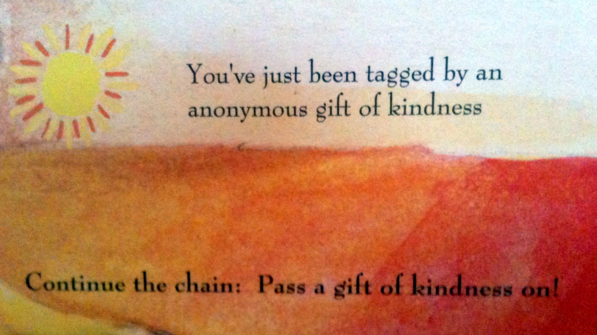

The idea of giving all year long developed from our collaborations with the estate sale organizations. These estate sale organizations gift us whatever household items are left from their sales and we then gift these items to small non- profit organizations that are in need of these items. These collaborations allow us to spread some positive energy in the community, assist those in need and help the non-profits continue to do their work with the families who are in need of assistance.
As a result of these collaborations with estate sales, we have already established connections with 14+ small non- profit organizations serving the community (
click here for a current listing of those organizations with whom we are working). We are in process of establishing a permanent clearinghouse of "in kind" donations that are gifted directly to those families and organizations in need. We have gifted 30 families now. Stay in touch as things progress on this front.
Does this idea of directly assisting the community appeal to you? Interested in helping us? We are seeking professional grant writers, business people and fundraisers to assist us in funding this organization. We are also seeking volunteers to help us pick up and sort through these donations and even refurbish furniture in need of a make-over.
If you are interested in assisting, contact Kalei at
kalei@giftgiversanonymous.org.
Know an organization that would love to be gifted stuffed animals? We are told paramedics and hospitals have need of stuffed animals to help those children who have been traumatized. We have about 40+ stuffed animals. If you know a place we can gift them,
email us!


The Christmas Gift Giving project's main focus is on unadulterated giving. It is about gifting others, total strangers, just to spread joy and kindness. It is the purest form of giving, basically giving without an agenda. What a beautiful exchange of energy! The project has grown and others have asked to become involved. So, it is now an integral part of Gift Givers Anonymous.
How Does the Project Work: We collect donated "gently used items" or even new items all year long that people no longer need. We take those gifts and turn them into new gifts that can be gifted to people throughout the Albuquerque community. Then, in late November volunteers come together to package and wrap gifts. On one special weekend in December, we all go out into the community and give gifts away to people!! Each gift receives a card (pictured above) that says "You've Just Been Tagged By An Anonymous Gift Of Kindness...Continue The Chain and Pass A Gift Of Kindness On."
The best descriptions of the Christmas Project can be found on the Gift Giving Stories on this website. Click on the tab to read people’s experiences both in being the giver and recipient of these surprise gifts at Christmas time.
Christmas Gifting is coming up!
This year we already have about 300 gifts to gift the community. We have so many items we will be having 2 gift packing parties to get the gifts ready for gifting to the community. Please join us to help pack and to help distribute. Contact us if you want more information. Last year we had 3 generations helping to pack the gifts and people from all over the community helping to gift. Let's replicate that again this year and have even more people helping to distribute.

The Gift Givers Anonymous project began 5 years ago as a very small project and was originally just me gifting others anonymously on my own. It began simply as my way of spreading some small acts of kindness in the world, and hopefully, in the process, inspiring others to join me or spread kindness on their own.
The excitement and interest others have shown in the project have confirmed my belief that spreading positive energy in the community creates positive energy within one’s self and in others. The project has grown and flourished as new avenues and opportunities continue to open up. When I talk about the project everyone has encouraged me to keep it going. Last year it had grown so much that I needed assistance in packing and wrapping those gifts. A local senior apartment complex allowed me to come in and use their facility for wrapping. I held a “gift packaging party” and 12 people showed up to help me wrap and package gifts to be donated to the community. All ages were there at the party from ages 10 to 82! A few weeks later, 5 people showed up to play the role of “Christmas Gift Givers” and help gift the community anonymously. We randomly picked strangers off the street and gifted them as a way to spread some Christmas cheer throughout the community. Each gift comes with a card that describes the project and encourages them to keep the gift of kindness going.
This year yet another avenue opened up. We were able to collaborate with several local estate sale companies
(click here for a complete listing) These estate sale organizations gifted us what was left from their sales and from there the idea of establishing a year long non profit clearinghouse emerged! These collaborative relationships allowed us not only to collect items for the Christmas Gift Giving Project but to establish the GGA non profit clearinghouse. The clearinghouse allows us to gift the community all year long. This year long giving will help small, non profits in need of household or art supplies, more easily receive those items they need to allow them to continue their work in the community.
The idea of giving all year long developed from our collaborations with the estate sale organizations. As a result we have already established connections with 6 small non profit organizations serving the community. We are in process of establishing a permanent clearinghouse of "in Kind" donations that are gifted directly to those families and organizations in need. Stay in touch as things progress on this front.